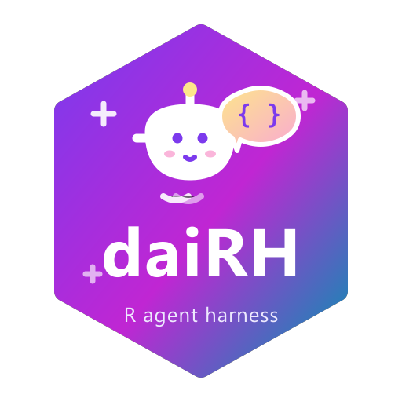

把一个能读写文件、运行代码、查文档的对话式编程 Agent 直接装进 RStudio 的 Viewer 面板。
- 任何 OpenAI 兼容端点都能接：Ollama（本机/局域网）、DeepSeek、智谱 GLM、Kimi、OpenAI、自建网关都只是”填
base_url+ 模型名”的事 - 底层流水线：ellmer（对话/工具调用）+ shinychat（流式聊天气泡）+ callr（子进程安全执行）
安装
# 方式一：源码直装（推荐；注意 Windows 下对本地目录用 type="source"，
# win.binary 的打包-解包路线在部分机器上会报 unzip 错误）
install.packages("path/to/daiRH", repos = NULL, type = "source")
# 想装进系统库而不是用户库，加 lib 参数：
# install.packages("path/to/daiRH",
# repos = NULL, type = "source",
# lib = .Library)
# 方式二：命令行
# "R.exe" --vanilla CMD INSTALL --no-multiarch path/to/daiRH
# 方式三：devtools
devtools::install("path/to/daiRH")使用
装好后重启 R 一次（让 RStudio 扫描 Addin），然后：
- Tools → Addins → DaiRH Chat：在 Viewer 面板打开对话助手
- Tools → Addins → DaiRH Settings：配置 provider / 模型 / Key
- （强烈建议绑快捷键）Tools → Addins → daiRH Send Selection：选中代码后 一键直发面板讲解（Tools → Modify Keyboard Shortcuts 搜 daiRH 绑定）。 面板里的”讲解选中代码”按钮走快照式上下文，快照只在控制台运行真实代码 时刷新（空回车不保证触发）
- 面板顶部两个图标：🧹 清空对话（= 开新会话：重置 Agent 会话与单轮硬预算， 不重启面板子进程；后台模式下当前会话先存入历史抽屉、可随时找回）和 ⚙ 设置；聊天区左上角 🕘 历史抽屉（后台模式）：多会话列表/搜索/切换， 重开面板自动续接最近一次会话；四个快捷按钮：
- 解释当前文件 / 讲解选中代码 / 审查当前文件 / R 文档问答
Agent 能做什么（示例指令）
帮我写个分析iris的脚本 analysis.R：按种花瓣长度分箱统计，然后运行验证Agent 会：list_files 看项目 → create_file 写脚本 → run_r_code 子进程跑 → 报错时读 stdout/error 自我修正 → 输出结论。edit_file 是唯一匹配的精确替换， 失败会自动重读原文修正；成功后在聊天里渲染变更片段（- 删除 / + 新增）并跳转到文件。 画完图让 Agent 调 show_plot：图片直接作为工具结果进入对话——聊天里内联渲染、 随会话历史重放，支持视觉的模型还能看图继续分析；leaflet 等交互地图用 show_html 在 RStudio Viewer 打开。
控制台 CLI（claude-code 风格）
不想开面板？控制台里直接跑：
daiRH::dairh_cli()ASCII 大字启动横幅（带动画）→ daiRH ❯ 提示符循环：任务直接敲，模型流式输出、 工具调用过程实时回显，每轮结束报”工具调用 N 步 / 预算”。 /help 看命令，/clear 开新会话，/tools 列工具，/exit 退出。 运行期间控制台被占用（同 gadget 模式）；硬预算/钩子/trace 与面板完全同一套 harness。
关闭助手（运行模式说明）
-
后台模式（
run_mode = "bg"，默认）：面板跑在独立子进程里，控制台随时可继续写代码。 关掉面板的那个标签页/浏览器页即可——最后一个页面关闭后，子进程几秒内自动退出 （控制台会出现一行带时间戳的DaiRH 面板子进程已退出）。 启动/重启面板全程有进度反馈（“正在启动…（3~15 秒）” → “已就绪（用时 X 秒）”）。 残留进程（含控制台 Restart R 之后句柄失效的孤儿面板）用daiRH::dairh_panel_stop()一键清掉——它会按启动时的 pid 登记回收孤儿，且只回收命令行带 callr 脚本标记的面板进程， 不会误伤其他 R 进程。 -
经典模式（
run_mode = "gadget"）：阻塞式，关掉窗口即结束，控制台在打开期间忙碌属正常。
配置
配置持久化在：
file.path(tools::R_user_dir("daiRH", "config"), "config.json")| 字段 | 说明 |
|---|---|
provider |
ollama（走 chat_ollama）或 openai_compatible（DeepSeek/GLM/Kimi/任意兼容网关） |
base_url |
如 http://localhost:11434（本机 Ollama）、https://api.deepseek.com
|
model |
模型名；设置里可”列出模型”自动发现 |
temperature |
采样温度 |
run_mode |
bg（默认，后台运行，不占控制台）或 gadget（经典模式，控制台同步占用） |
max_steps |
Agent 单轮工具调用步数：提示词约束 + 硬预算（超出即拦截，新消息自动重置） |
allow_edit / allow_run
|
安全开关：关掉后 edit_file/create_file / run_r_code 不会注册给模型 |
restrict_paths |
文件工具是否限制在项目目录内（默认开） |
system_prompt_extra |
追加到系统提示的个性化要求 |
bg_image |
面板背景图（本地路径或 http(s) URL；留空 = 内置夜樱） |
trace |
是否记录工具调用轨迹（dairh_trace() 查看；默认开） |
trace_dir |
工具轨迹目录（留空 = 默认 cache 目录；0.5 起可配） |
tools_profile |
工具脚本路径（启动时 source，注册自定义工具/钩子；后台模式必经通道） |
history |
会话历史抽屉（仅后台面板）：多会话切换、重开面板自动续接最近会话（默认开） |
history_dir |
会话历史存储目录（留空 = 默认用户数据目录；0.5 起可配） |
history_title |
LLM 给会话自动起标题（看前两轮对话，多一次调用；默认开） |
allow_subagent |
是否注册 delegate_task 子代理委派工具（默认开；深度锁 1 层） |
subagent_max_steps |
子代理单轮硬步数（默认 8） |
网页版白嫖路线：本地起任意 “web → OpenAI 兼容” 网关，设置里 provider 选
OpenAI 兼容、base_url指过去即可，插件零改动。
OpenCode Go 套餐接入：设置里选 opencode.go 预设（自动填 https://opencode.ai/inference/go/openai/v1 + glm-5.3-flash）， API key 自己填（key 直填，或填环境变量名——想和 codex 完全同源就在 “API Key” 框里填 env:变量名）。该网关走 OpenAI 兼容协议（实测 /chat/completions 可用；未提供 GET /models，故”列出模型”在此预设下 会提示手动填模型名）。网关要求 x-opencode-session 会话头，插件已自动 生成（每个面板一次会话 ID，无需配置）。注意额度按”次”计：面板每次成功 回复消耗 1 次。若报 401 Invalid credential，去 opencode.ai 控制台核对 Go 计划的 API key（网页登录 cookie 不是 key）。
架构：daiRH 是一个真正的 harness
不只是聊天壳——每次工具调用都会经过统一的 harness 层：
面板 UI ──► Agent 会话（dairh_new_agent）
├─ ① 工具注册表：内置 12 工具 + dairh_register_tool() 注册的自定义工具
├─ ② 工具包装器：pre/post 钩子 → 硬步数预算 → 执行 → trace 留痕
└─ ③ tools_profile 脚本：面板启动时自动 source（跨进程注册通道）自定义工具
把项目特有的能力教给 Agent：
dairh_register_tool(
"load_my_data",
function(path) paste0("OK: 已加载 ", path),
"读取本项目约定的数据文件并返回结构摘要。数据不存在时返回 FAIL 开头的说明。",
arguments = list(path = ellmer::type_string("数据文件路径", required = TRUE))
)钩子（拦截、改写参数与改写结果）
-
pre_tool：function(name, args)，返回字符串即拦截本次调用（如禁止碰.Renviron）； 返回dairh_rewrite_args(new_args)则改写参数后放行（改写动作记入 trace） -
post_tool：function(name, args, result)，返回字符串即替换工具结果（如脱敏）
dairh_add_hook("pre_tool", function(name, args) {
if (name %in% c("read_file", "edit_file") &&
grepl("Renviron|\\.env$", args$path %||% "")) "敏感文件禁止读写"
})
# 参数改写：统一收紧 run_r_code 的超时
dairh_add_hook("pre_tool", function(name, args) {
if (identical(name, "run_r_code")) {
dairh_rewrite_args(list(code = args$code, timeout_sec = 120))
}
})子代理委派（delegate_task）
独立子任务不用占用主对话：主 Agent 调 delegate_task(task)，一个全新的 Chat 带着同样的 工具集去跑（上下文隔离，子代理看不到主对话；深度锁 1 层防递归；独立硬预算 subagent_max_steps）。适合”跑一遍测试汇总失败项”“独立调研某个包的用法”这类跑腿活。 委派是同步的，期间面板不流式回显子过程。
技能库（skills）
把领域规程、代码模板、团队约定写进 tools::R_user_dir("daiRH", "data")/skills/： 每个 <name>.md（或 <name>/SKILL.md 目录形态）就是一个技能。Agent 用 read_skill 按需加载——空参列清单、给名读全文（≤ 64KB），不占常驻上下文；技能库非空时系统 提示词会自动提示模型先查技能库。daiRH::dairh_read_skill() 控制台自检清单。
硬步数预算
max_steps 不再只是提示词里的”建议”：单轮任务连续工具调用超过 N 步后， 后续调用直接被拦截并返回 FAIL，模型会总结阶段成果收尾；用户下一条消息自动重置预算， 说”继续”即可接着干。设置里 3–60 可调。
调用轨迹（trace）
每次工具调用的参数、耗时、结果摘要、是否被拦截都写进 jsonl；硬预算回合重置 （turn_reset）和面板清空对话（session_reset）也会留痕：
daiRH::dairh_trace_path() # 当前/最近一次会话的 trace 文件
daiRH::dairh_trace(10) # 最近 10 条记录（data.frame）文件在 tools::R_user_dir("daiRH", "cache")/traces/，可在设置里关掉（trace = 否）。
tools_profile：后台模式的自定义通道
后台模式的面板跑在独立子进程里，主会话的注册对它不可见。把注册代码写进一个 R 脚本（推荐用绝对路径），设置里 tools_profile 指向它——每次面板启动自动 source（同一进程同一文件只执行一次，改动后重开面板生效）：
# C:/Users/me/dairh-profile.R
dairh_register_tool("load_my_data", ..., overwrite = TRUE)
dairh_add_hook("pre_tool", ..., name = "guard-env")安全模型
- 文件操作默认限制在当前项目目录内（
restrict_paths） -
run_r_code在 callr 子进程执行：不污染 RStudio 会话、可设超时（5–600s）、结果只回传文本 - 所有工具失败都以
FAIL: ...文本回传给模型（不会炸面板），模型按提示自我修正
已知边界
- Agent 步数由提示约束 + 用户观察控制，未做硬熔断
- 模型能力（工具调用质量）取决于所接的模型本身
- gadget 打开期间 R 控制台显示忙碌属正常（Shiny gadget 模式）
-
编辑器上下文是快照式（后台模式）：随 RStudio 控制台活动自动刷新（改动文件后 Ctrl+S 保存并在控制台按一次回车即可）；未保存（Untitled）的活动文件抓不到内容， 讲解/解释前先保存，或直接给文件路径让 Agent
read_file
开发
devtools::load_all("path/to/daiRH")
testthat::test_dir("path/to/daiRH/tests/testthat", package = "daiRH")代码结构见 R/：config.R（配置/预设）、client.R（provider 与模型列表）、 harness.R（工具注册表/钩子/硬预算/trace，harness 核心）、tools_agent.R（9 个内置工具）、 agent.R（系统提示/会话组装）、context.R（RStudio 上下文）、 app_shiny.R（面板与设置）、background.R（后台模式与面板进程管理）、 cli.R（控制台 CLI）、addin.R（Addin 入口，注册于 inst/rstudio/addins.dcf）。 维护约定与常用命令见 AGENTS.md。
作者
Shaoqing Dai（GISerDaiShaoqing） · ORCID 0000-0003-0858-4728 · 个人主页